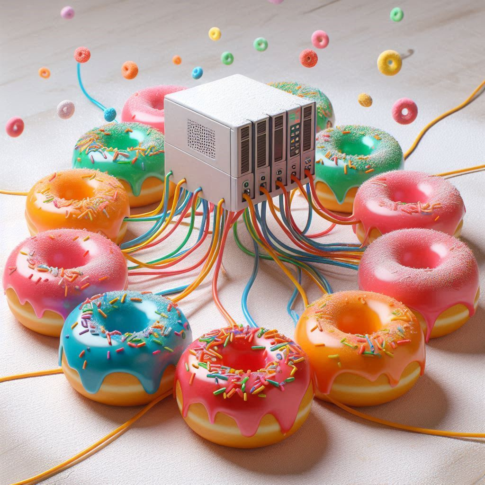
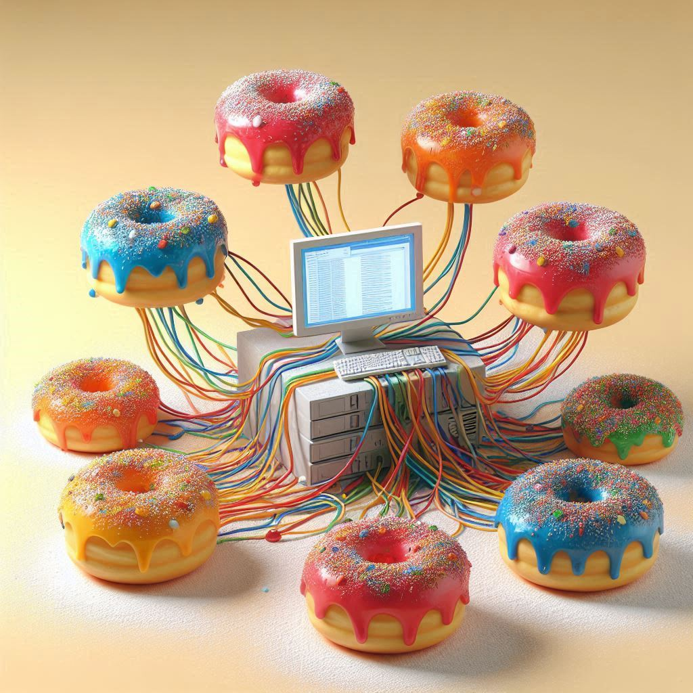
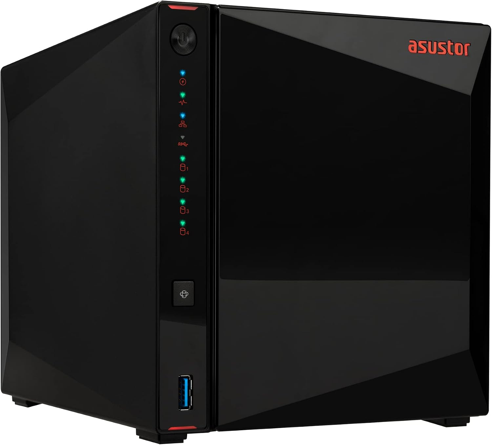

NAS
I built and run a home media server for my family, a small Network Attached Storage (NAS) that stores our movies and shows and streams them to every TV and phone in the house. Getting it set up meant learning storage, networking, containers, and security the hard way: RAID disks, remote access without opening the house to the internet, Docker services that stay healthy, and locking down what we don’t need. It’s a hobby that doubles as real systems-admin practice.

Origin story
We got tired of renting movies from a big streaming service, and getting charged for increasingly sub-par offerings and service. Plus, it was annoying that we sometimes had the physical copies of many movies, but it was frequently impossible to tell where it was actually streaming, if at all! We went back to physical media for a bit until I learned more about home media servers. We started with just ripping movies to thumb drives, then an old laptop served as a server, then we got serious and built a NAS. Old DVDs can be bought for so little these days, that it’s pretty easy to get our hands on the media we want on our server, rip it, compress it, and upload it to be watched by the family.

Stack
I designed and maintain a household NAS that holds our media library and streams it through Jellyfin to phones, TVs, and living-room devices. Under the hood it’s an Asustor box with RAID storage, Docker containers managed in Portainer, Tailscale for private remote access, and a Cloudflare tunnel for use where needed. Keeping this running includes the boring but important work of health checks, certificates, and security hardening.
- Jellyfin
- Asustor
-
 Cloudflare
Cloudflare
-
 Docker
Docker

- Portainer
- Tailscale
-
 Linux
Linux
- EZ Share
What started as “can we watch our own stuff?” turned into hands-on practice in:
- Systems administration — installing, updating, and babysitting always-on services
- Storage & reliability — RAID volumes, disk health, capacity planning
- Containers — Docker/Portainer stacks (media server, VPN mesh client, tunnel agent)
- Networking & zero-trust access — private mesh VPN, no port forwards
- Security hygiene — shrinking attack surface, monitoring, and fixing misconfigured health checks
- Troubleshooting — reading logs, isolating “looks down but isn’t,” and recovering cleanly
Looking ahead
Eventually, we’d like to get to a point where our home server also acts as a replacement for a lot of our Google stuff, like Drive, Photos, etc. In the meantime, this is fun and interesting, and keeps me on my toes!
Since we use the NAS mainly for Jellyfin, we call it the Jelly DoNAS, hence the imagery.